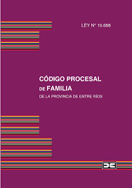

Dra.Malvina Graciela Aramayo M°9832 T°1 F°267.Cuota de Alimentos. Responsabilidad Parental.Filiación.
PRINCIPIOS GENERALES Art. 1º: Principios procesales. El trámite en los procesos de familia, debe conducirse observando los siguientes principios: 1) Autoridad del Juez: los jueces tienen el deber de prevenir y sancionar todo apartamiento de la buena fe y lealtad procesal y de dirigir el proceso para asegurar su observancia; 2) Los procesos de familia deben tramitar ante jueces especialistas; 3) Oficiosidad: el tribunal tomará de oficio las medidas tendientes a evitar su paralización y adelantar su trámite con la mayor celeridad posible; 4) Celeridad; 5) Oralidad con inmediación; 6) Concentración; 7) Saneamiento; 8) Eventualidad; 9) Inmediación; 10) Acceso limitado al expediente: el acceso está limitado a las partes, sus representantes, letrados y a los auxiliares designados en el proceso. En caso de que las actuaciones sean ofrecidas como prueba ante otro juzgado, la remisión se ordena sólo si la finalidad de la petición lo justifica y se garantiza su reserva; 11) Flexibilidad de las formas: para evitar excesos rituales, el Juez puede adaptar las formas sin conculcar el debido proceso. El pedido y la causa de la petición pueden ser interpretados extensivamente; 12) Veracidad y colaboración procesal; 13) Preferencia por la solución consensuada de los conflictos; 14) Tutela judicial efectiva, que debe manifestarse en el acceso a la justicia, el debido proceso, la eficacia de institutos y procedimientos y la materialización oportuna de los derechos reconocidos.-
Suscrita en San José de Costa Rica el 22 de noviembre de 1969, en la Conferencia Especializada Interamericana sobre Derechos Humanos
Artículo 17. Protección a la Familia 1. La familia es el elemento natural y fundamental de la sociedad y debe ser protegida por la sociedad y el Estado. 2. Se reconoce el derecho del hombre y la mujer a contraer matrimonio y a fundar una familia si tienen la edad y las condiciones requeridas para ello por las leyes internas, en la medida en que éstas no afecten al principio de no discriminación establecido en esta Convención. 3. El matrimonio no puede celebrarse sin el libre y pleno consentimiento de los contrayentes. 4. Los Estados partes deben tomar medidas apropiadas para asegurar la igualdad de derechos y la adecuada equivalencia de responsabilidades de los cónyuges en cuanto al matrimonio, durante el matrimonio y en caso de disolución del mismo. En caso de disolución, se adoptarán disposiciones que aseguren la protección necesaria de los hijos, sobre la base única del interés y conveniencia de ellos. 5. La ley debe reconocer iguales derechos tanto a los hijos nacidos fuera de matrimonio como a los nacidos dentro del mismo.querella Del lat. querella. 1. f. Expresión de un dolor físico o de un sentimiento doloroso. 2. f. Discordia, pendencia. 3. f. Der. Acto por el que el fiscal o un particular ejercen ante un juez o un tribunal la acción penal contra quienes se estiman responsables de un delito. 4. f. Der. Reclamación que los herederos forzosos hacen ante el juez, pidiendo la invalidación de un testamento por inoficioso.